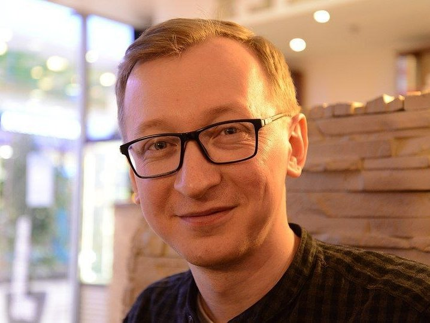

Ребёнок решает быстрее класса и скучает на уроке? Ему нужны задачи, к которым не подходит готовый шаблон. Занимаемся олимпиадной математикой с 2021 года — каждый год десять и больше наших учеников берут призовые места.
Посмотрим, что ребёнок уже умеет и где ему интересно, и подберём группу по уровню. Перезвоним и согласуем удобное время.
Это не разовые занятия «для развития мышления». Это направление, которое работает с 2021 года и даёт результат, который видно.
Дипломы II и III степени Всероссийской открытой олимпиады по математике для начальной школы губернаторского физико-математического лицея № 30.
Дипломы Санкт-Петербургской открытой математической олимпиады начальной школы.
Сопоставимый результат: призовые места на тех же соревнованиях.
Рейтинг центра на Яндекс Картах — 5,0 при более чем 70 отзывах, награда «Хорошее место».
Олимпиадная математика у нас не отдельный кружок, а направление внутри занятий. В группе до шести человек трое могут разбирать школьную программу, а трое — олимпиадные задачи. Каждый идёт по своему маршруту и в своём темпе.
Поэтому сильного ребёнка никто не тормозит. Он не ждёт, пока класс догонит, и получает следующую задачу тогда, когда готов её взять, а не когда до неё дошла программа.
И наоборот: если ребёнку нужно время, его не гонят вперёд. Это одна и та же комната, один педагог и шесть разных траекторий.
Один на один ребёнок остаётся наедине со взрослым и своими ошибками. В группе он видит, как думают другие, слышит чужие ходы решения и перестаёт бояться ошибиться вслух.
В классе из пятнадцати человек преподаватель ведёт одну общую программу — по среднему уровню. Сильному там скучно, отстающий не успевает. Шесть человек — предел, при котором можно вести каждого отдельно.
Олимпиадную задачу нужно обсуждать: объяснить ход, услышать возражение, поспорить. Через экран это теряется, поэтому онлайн-групп у нас нет.
Отбора у нас нет — берём всех, кому интересно. Программа подстраивается под ребёнка, а не наоборот.
А если нужно просто подтянуть школьную программу?
Тогда вам на страницу школьной математики — там про то, как разобраться с темами, двойками и контрольными. Занятия те же, в тех же группах, просто программа другая.
Школы городского набора — сильные петербургские школы, куда берут не по прописке, а по вступительному испытанию. Задачи там сложнее школьных и требуют другого подхода: одной хорошей успеваемости не хватает.
Разбираем формат вступительного испытания, решаем задания прошлых лет, учимся укладываться в отведённое время и закрываем пробелы, из-за которых теряются баллы.
Вступительные задачи ближе к олимпиадным, чем к школьным. Ребёнок, который привык к нестандартным условиям, на экзамене не встречает ничего незнакомого.
Не «проходит темы», а приобретает привычки, которых школьная программа не даёт.
Олимпиадная задача не подписана темой урока. К ней не подходит только что выученный приём — надо понять, что вообще происходит в условии.
Мало получить ответ — надо объяснить, почему он единственный. Это тот навык, который потом вытаскивает и на экзамене, и в старших классах.
Задача, которая не решается за минуту, — это нормально. Ребёнок привыкает сидеть над ней, пробовать, ошибаться и возвращаться, а не закрывать тетрадь.
Разбираем задачи прошлых олимпиад, учимся выбирать, за какие браться первыми, и не терять время на той, что не идёт.



Александр Харин — руководитель центра «Интеллектиум». Математику ведёт сам, никому не передаёт.
Пять лет работал учителем начальных классов в школе. Потом открыл собственный кабинет математики, из которого вырос детский центр. Олимпиадной математикой занимается с 2021 года — программу, задачи и разборы собирает сам, под своих учеников.
Разборы олимпиадных задач публикует в телеграм-канале «Интеллектиум · Лаборатория» — можно посмотреть, как выглядят занятия изнутри, ещё до записи.
Цена та же, что на школьной математике: олимпиадное направление не стоит дороже.
Первое занятие — бесплатная диагностика. Смотрим, что ребёнок уже умеет, где ему интересно и с какого уровня начинать. После неё вы решаете, продолжать или нет.
Занимаемся по адресу: Санкт-Петербург, ул. Оптиков, 45к1, Приморский район. Группы до 6 человек, только очно.
1 раз в неделю — 4 500 ₽ в месяц (4 занятия), 2 раза в неделю — 7 500 ₽ в месяц (8 занятий). Цена та же, что на школьной математике — олимпиадное направление не стоит дороже.
Занимаемся с учениками 1–5 класса. Отбора нет — берём всех, кому интересно, программа подстраивается под ребёнка. Первое занятие — бесплатная диагностика, на ней смотрим уровень и подбираем группу.
Санкт-Петербург, ул. Оптиков, 45к1, Приморский район. От метро Беговая и Старая Деревня — 15–20 минут пешком. Занятия только очно.
Направлению 5 лет, работаем с 2021 года. Каждый год десять и больше наших учеников берут призовые места на Всероссийской олимпиаде для начальной школы лицея №30 и на Санкт-Петербургской открытой математической олимпиаде начальной школы.
Занятия идут в тех же мини-группах до 6 человек, что и школьная математика, но по другой программе: без готовых шаблонов, с нестандартными задачами и разбором, почему ответ единственный. Подходит и тем, кто просто любит математику, без цели идти на олимпиады.
Да. Вступительные испытания в школы городского набора ближе к олимпиадным задачам, чем к школьным. На занятиях разбираем формат экзамена, решаем задания прошлых лет и закрываем пробелы, из-за которых теряются баллы.
Оставьте заявку — перезвоним, ответим на вопросы и подберём удобное время. Если удобнее голосом, звоните: +7 (981) 896-25-75